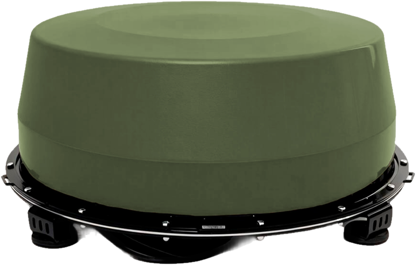
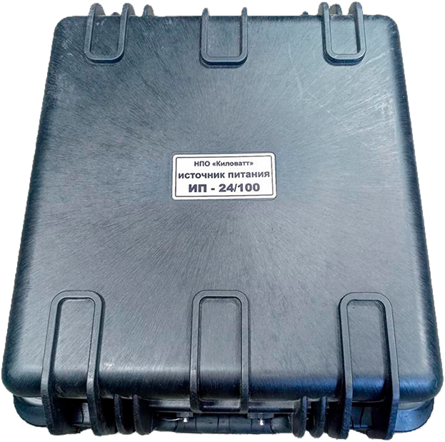

Сначала обнаружь. Потом подави.
Эшелон защиты
Пять ступеней контура. Собираются под задачу объекта — без переплаты за лишнее.
-
01

Обнаружение
«Сигнал-М2»
автоматически включает подавление300–10 000 МГц
1000–5000 м -
02

Подавление
«Капюшон» К-12М
купол на транспорт
для объекта — «Штора» / «Ребус-4»50–200 м
до 240 Вт -
03

Навигация
«Поле-31»
GPS · ГЛОНАСС · BeiDou · Galileoне менее 2000 м
до 240 Вт -
04

Питание
ИП-24/100
борт 12/24 В · сеть 220 В24 В · 105 А·ч
до 4 потребителей -
05

Контроль
РЭБ-тестер Т-9
проверка перед вводом и в сервисе9 частот
250–5800 МГц
Схема контура: обнаружение → подавление → навигация → питание → контроль. Ступени 01–05 собираются под объект: стационар ставится на площадной объект, купол — на транспорт. Дальность зависит от условий эксплуатации.
По шагам
Начинаем с обнаружения, добавляем подавление на транспорт и периметр, стационар ставим на площадной объект. Платите за нужные ступени.